ביקורת ביטחון
השלב שאפשר לזמן מראש. בוחרים חלון, ומקבלים אישור עם QR.
״התור הכי ארוך היה דווקא בבידוק הביטחוני, אבל בדרך כלל אצלי זה קורה בצ׳ק-אין״ריאיון אמיתי 3
נתב״ג · ביקורת ביטחון
Leeway מזמן לכם חלון זמן לביקורת הביטחון, וביום הטיסה מראה איפה אתם עומדים בשני השלבים שמעכבים: ביטחון, ואחריו צ׳ק-אין.
למי שמגיע שלוש שעות מראש, כי אף אחד לא אומר לו מה יעכב אותו דווקא היום.
הזרימה המלאה, בדפדפן, בלי הרשמה.
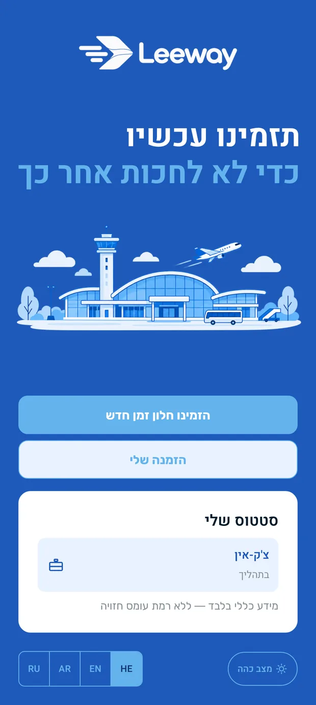
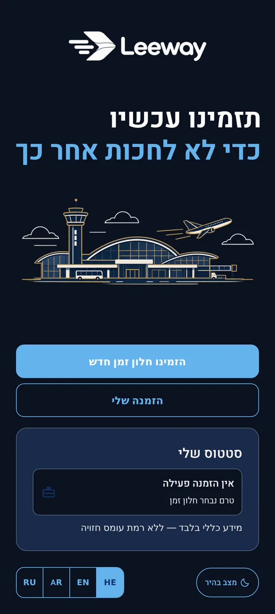
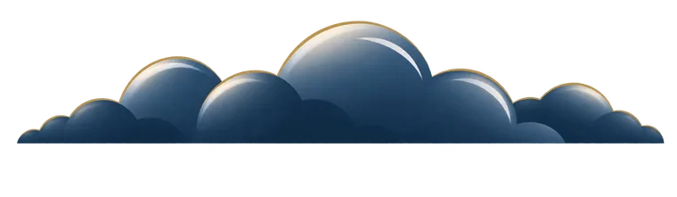
הבעיה
ברוב שדות התעופה הבידוק מגיע אחרי הצ׳ק-אין. בנתב״ג הוא לפניו, והוא שיחתי, כלומר בלתי צפוי בזמן. הראיונות הראו שהעיכוב מחליף מקום בין השניים, לפעמים אצל אותו אדם בין טיסה לטיסה.
השלב שאפשר לזמן מראש. בוחרים חלון, ומקבלים אישור עם QR.
״התור הכי ארוך היה דווקא בבידוק הביטחוני, אבל בדרך כלל אצלי זה קורה בצ׳ק-אין״ריאיון אמיתי 3
השלב שאי אפשר לזמן. מוצג כהערכה שמתעדכנת ביום הטיסה, אחרי שהביטחון הסתיים בפועל.
״זה גרם לצעקות וריבים בין הנוסעים, ולקח לי יותר משעה לעבור את הצ׳ק-אין״ריאיון אמיתי 3
לכן הנוסע מתמחר את שני השלבים ומגיע שלוש שעות מראש, כל פעם מחדש.
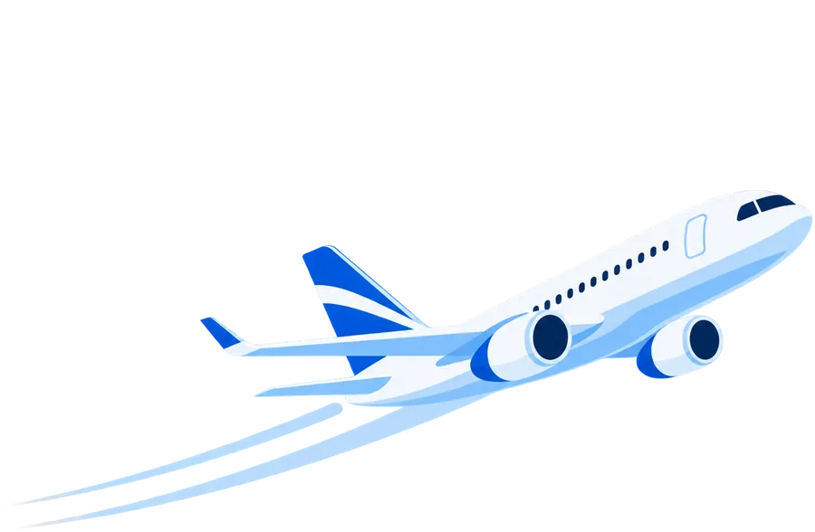
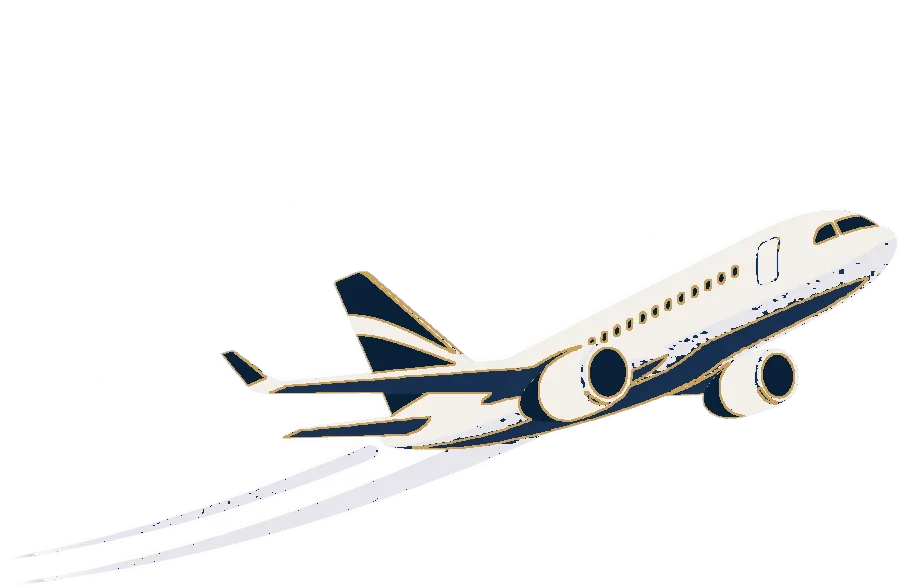
מה עושים
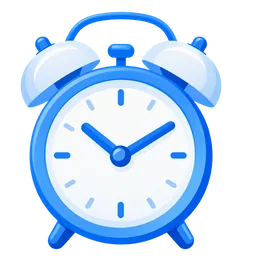
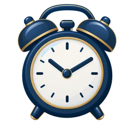
בחירה אמיתית אחת: חלון זמן לביקורת הביטחון בלבד. הצ׳ק-אין לא מוצג כבחירה, כי הוא לא באמת בשליטתכם.
01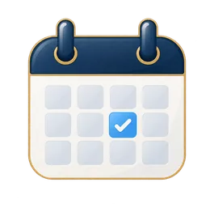
קוד QR שנפתח במסך מלא, בבהירות מלאה, וגם כשאין קליטה בטרמינל.
02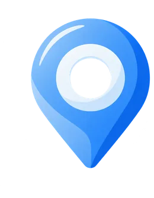
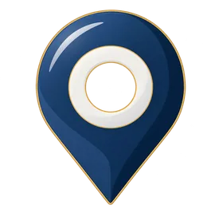
איפה אתם על הציר בשני השלבים. אין נתון עדכני? מוצג האחרון הידוע, עם חותמת זמן.
03המסכים
לא ייצוא מ-Figma ולא מוקאפ. צילומים מדפדפן אמיתי מול המוצר. לחיצה על מסך פותחת אותו בגודל מלא.
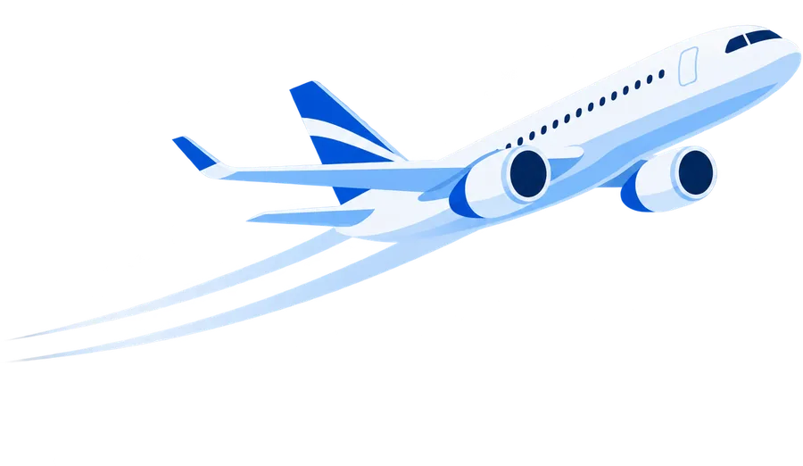
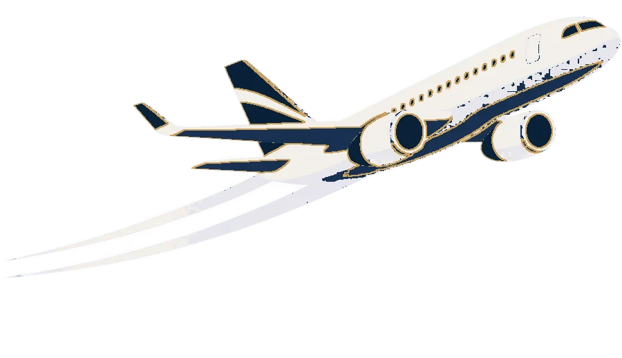
החלטות
בעמדה בודקים דרכון וכרטיס עלייה פיזיים. המסך יודע את מקומו ולא מתנהג כאילו הוא הסמכות שנבדקת.
עברית, ערבית, אנגלית ורוסית, בלי לאבד מה שכבר מולא.
לפי הגדרת הטלפון, עם החלפה ידנית. טרמינל בחמש בבוקר.
שטחי מגע 48 פיקסלים, ניווט מלא במקלדת, תמיכה בתנועה מופחתת, וטקסט שמתאים גודל.
מה לא מובטח
אם זימון תור היה מקום, הוא היה עמדת מידע קטנה בכניסה לתור. כזו שתמיד אומרת לך איפה אתה עומד עכשיו, ולעולם לא מתיימרת להיות השומר עצמו.
מסך שמבטיח ״הכול יהיה חלק״ נשבר בפעם הראשונה שמשהו משתבש.
מסך הסטטוס מציג מידע כללי בלבד. זהו חור פתוח ומתועד במוצר, לא פיצ׳ר שהוסתר.
העצימות הרגשית בביקורת יורדת ל-1.5 מתוך 5. טון משועשע שם לא מתאים לחומרת הרגע.
זהו פרויקט גמר שמדגים זרימה מלאה מקצה לקצה.
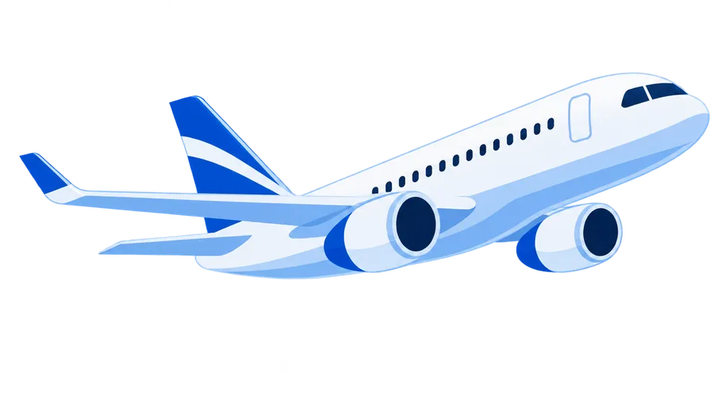
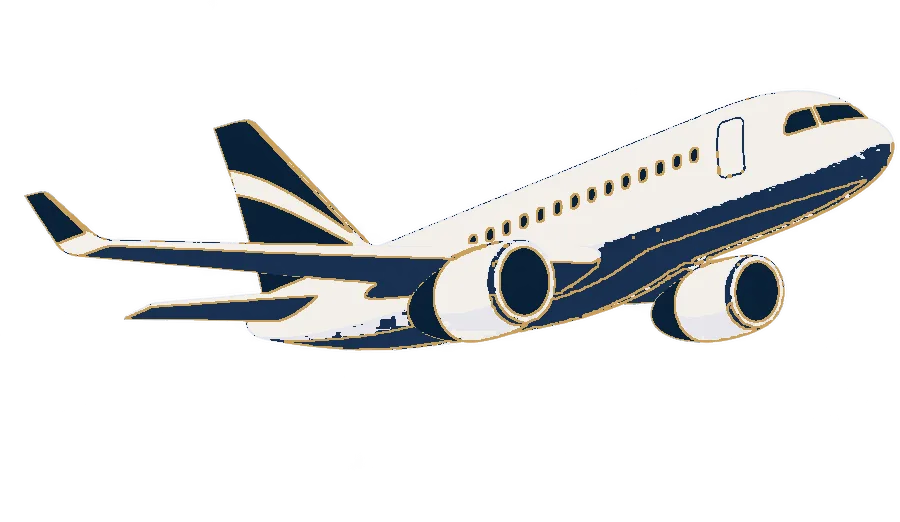
פרטיות
הפרטים שאתם מקלידים נשמרים על המכשיר בלבד, ורק אם ביקשתם זאת ב״זכרו אותי״. במסך הפרופיל יש כפתור אחד שמוחק את הכול, והוא בודק את עצמו אחרי המחיקה ומראה לכם מה נשאר.